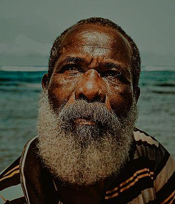

Jane Goodall Quote
My mother always taught us that if people don't agree with you, the important thing is to listen to them. But if you've listened to them carefully and you still think that you're right, then you must have the courage of your convictions.
-Jane Goodall
Martin Luther King Jr. Quote
The ultimate tragedy is not the oppression and cruelty by the bad people but the silence over that by the good people..
-Martin Luther King Jr.
Dietrich Bonhoeffer Quote
The ultimate test of a moral society is the kind of world that it leaves to its children.
-Dietrich Bonhoeffer
Julia Child Quote
I was 32 when I started cooking; up until then, I just ate.
-Julia Child
Bob Marley Quote
Money can't buy life.
-Bob Marley

Bob Marley Quote
God sent me on earth. He send me to do something, and nobody can stop me. If God want to stop me, then I stop. Man never can.
-Bob Marley
Martin Luther King Jr. Quote
The function of education is to teach one to think intensively and to think critically.
Intelligence plus character - that is the goal of true education.
-Martin Luther King Jr.

Winston Churchill Quote
The truth is incontrovertible. Malice may attack it, ignorance may deride it, but in the end, there it is.
-Winston Churchill

Winston Churchill Quote
Success consists of going from failure to failure without loss of enthusiasm.
-Winston Churchill

Watchman Nee Quote
Recognize already that regeneration of the Spirit is the paramount need of man.
― Watchman Nee
Quote by C. S. Lewis
If I find in myself a desire which no experience in this world can satisfy, the most probable explanation is that I was made for another world.
-C. S. Lewis

Myles Munroe Quote
The value of life is not in its duration, but in its donation. You are not important because of how long you live, you are important because of how effective you live.
-Myles Munroe


{kind=link}
{kind=link}
{kind=link}
{kind=link}
{kind=link}
{kind=link}
{kind=link}
{kind=link}